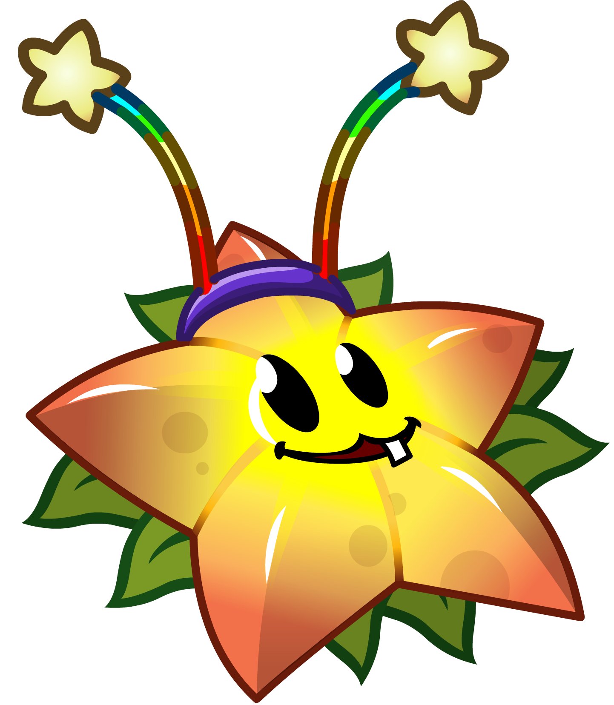

Choose your challenge of liking:

Choose your challenge of liking:
Perpetually Seeing Stars
| Difficulty | Easy |
| Rating |

|
| Type | Challenge |
Objective
Set up a permanent farm in the Seeing Stars Mini-game
Rules
No Cheating or Glitches
"I'm pretty sure the developers were aware of this fact, because the drop rate for coins is very minimal."
I have been told previously that Starfruits are extremely good for their price. 5 shots for 125 Sun, compared to 100 Sun for a Peashooter? (Though honestly, unless you spam a lot of them, they aren't very accurate – but otherwise, they shred through zombies.)
That being said, we can prove this point by setting up a perpetually Mini-game of Seeing Stars ,using the power of Starfruits and then some.
(Also, Magnifying Grass from PvZ2? Yeah. A game changer like Starfruit. Too bad no one knows how good it is when used right, and spend all their cash on useless premium plants like Snow Pea instead.)
The whole of the game will take place in the Seeing Stars Mini-game, due to the low health of zombies that you have to fight (the strongest being the Buckethead Zombie).
The point of the game is to place Starfruit on the lawn to form a large Star pattern, but we can easily make the game run perpetually.
However, this means that the Seeing Stars Mini-game will first have to be unlocked. this means 4 other Mini-games have to first be beaten, being one of the below:
On Mobile versions, the Seeing Stars Mini-game does not go on forever; instead it goes through 4 Flags, upon which you will lose if you do not plant the final Starfruit (before the last zombie dies).
A lot of plants we are using will be Upgraded Plants, so we will need quite a number of Seed Slots. The following 10 plants are shown according to importance:
| Seed Slot | Cost | Plant |
|---|---|---|
| 01. | - | Starfruit* |
| 02. | - | Melon Pult* |
| 03. | - | Winter Melon* |
| 04. | - | Fume Shroom* |
| 05. | - | Gloom Shroom* |
| 06. | - | Coffee Bean* |
| 07. | $750 | Sunflower* |
| 08. | $5,000 | Twin Sunflower |
| 09. | $25,000 | Pumpkin |
| 10. | $80,000 | Imitater |
On starting out, plant Sunflowers in the first 2 columns (minimally).
Start filling in the 4th column with Starfruits. This gives you one row of Starfruit, which early on, is very powerful.
Start replacing Sunflowers in the first column with Melon-Pults when you have sufficient Sun, and upgrade them to Winter Melons. If you need more Sun, you can upgrade the second row of Sunflowers to Twin Sunflowers.
Proceed to plant Fume Shrooms in the 7th column, on the 1st and 3rd rows, after you have placed at least 3 Winter Melons. If you feel the zombies may be too overwhelming, add more Starfruits, and protect the Gloom Shrooms with Pumpkins.
In the end, all Starfruits should be placed (save for one in the second column). The 7th column should be filled with Gloom Shrooms, and Winter Melons placed in every other location.
If done well, the zombies should die before making it to the 7th column, making the level basically perpetually running, so long as you don't place the Final Starfruit. Sit back and enjoy your hard work as you collect coins (and maybe go get a snack).
(Important!!! The lawn must be symmetrical, as much as possible, so as to not trigger the OCD of everyone you ever know, who will immediately declare you as a menace to society.)
This is pretty easy, so long as the level isn't a Mini-game level.
Simply complete the level the normal way, but leave one zombie alive. You can delay it for as long as possible, so long as there is consistently a Wall-Nut, Tall-Nut or Pumpkin for it to eat.
While you mess around, you can place Marigolds on the lawn, and if you are feeling lazy, place ~4 Gold Magnets around to collect soins for you.
If you are feeling risky, you could go get a snack while the zombie snacks on the Wall-Nut, Tall-Nut or Pumpkin.
 |
 |
Seeing Stars Completed, the normal way |
|
Previous | Index | Next |
Start |
 Detara showing off how to turn Seeing Stars into a screensaver
Detara showing off how to turn Seeing Stars into a screensaver